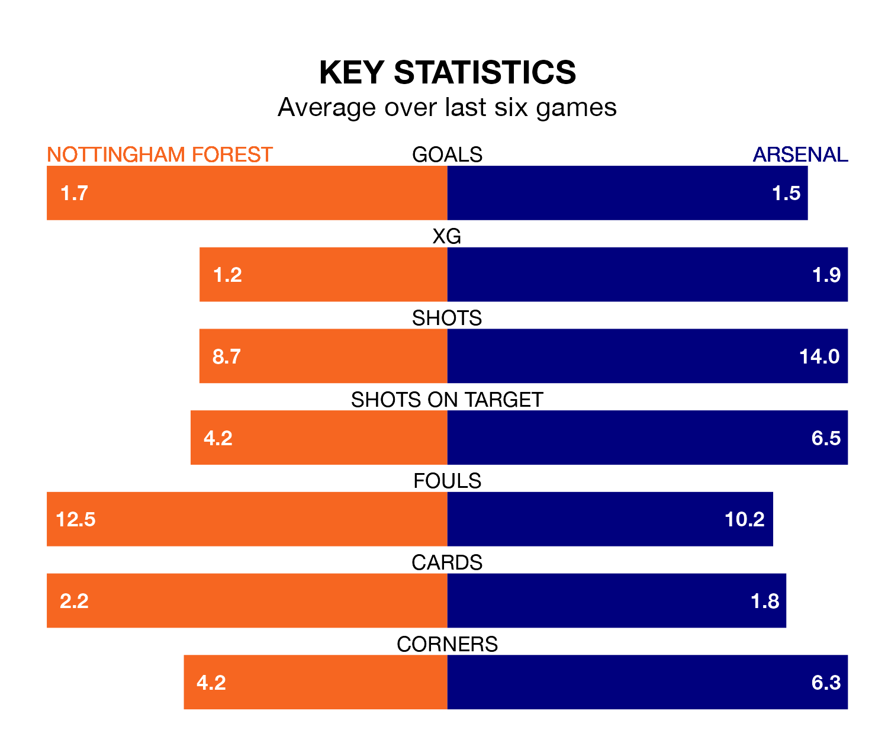

Mid-season relegation candidates Nottingham Forest face a challenge against high-flying Arsenal at the City Ground on Tuesday.
Nottingham Forest are 17th in the Premier League table, and have picked up five wins and five draws in their 21 games to date.
The Gunners, meanwhile, are third in the standings with 43 points, having won 13 and drawn four, and are five points behind table-toppers Liverpool.
With 42 goals in 21 games so far this season, Arsenal are scoring more than average in the league with 2.0 goals per game. And they are conceding fewer than average, letting in 20 goals at a rate of 1.0 per game.
Forest, meanwhile, are below average scorers, with 1.2 goals per game, compared to a league average of 1.6. They have conceded 1.8 goals per game.
In the last 10 years, Forest and Arsenal have played each other on seven occasions. Forest won three of them and Arsenal four.
On average, the Tricky Trees scored 1.0 goal and the Gunners 2.6 in those matches.
Their last meeting was on August 12, when Arsenal won 2-1 at home.
In David Raya, the Gunners can rely on one of the league's safest pair of hands. He has kept six clean sheets in his 16 appearances this season, and only two other 'keepers – Everton's Jordan Pickford and Liverpool's Alisson Becker – have been able to prevent the opposition scoring on more occasions in the Premier League.
In the Tricky Trees's net, Matt Turner has two clean sheets in 16 games. He has conceded a goal every 60 minutes, 50% more often than the 90 minutes between goals for Raya Martin.
The home team are in mixed form in the Premier League, with two wins and a draw from their last six games.
And also with two wins and a draw over that period, the visitors' form is identical – they have both taken seven points from 18.
Forest's last match was on January 20, a 3-2 loss against Brentford, with Chris Wood and Danilo Oliveira getting the goals for the Tricky Trees.
Arsenal beat Crystal Palace 5-0 last time out, also on January 20, with Gabriel Martinelli (two), Dean Henderson (own goal), Gabriel Magalhães and Leandro Trossard on the scoresheet.
Tuesday's match will be refereed by Simon Hooper, who has taken charge of 12 Premier League games so far this season, issuing three red cards and booking 66 players. He has not awarded any penalties.
The last Arsenal game Hooper refereed was the 1-0 win away at Everton on September 17. He is yet to oversee a match featuring Forest this season.
Updated: 10:03 (UTC), 30/01/24